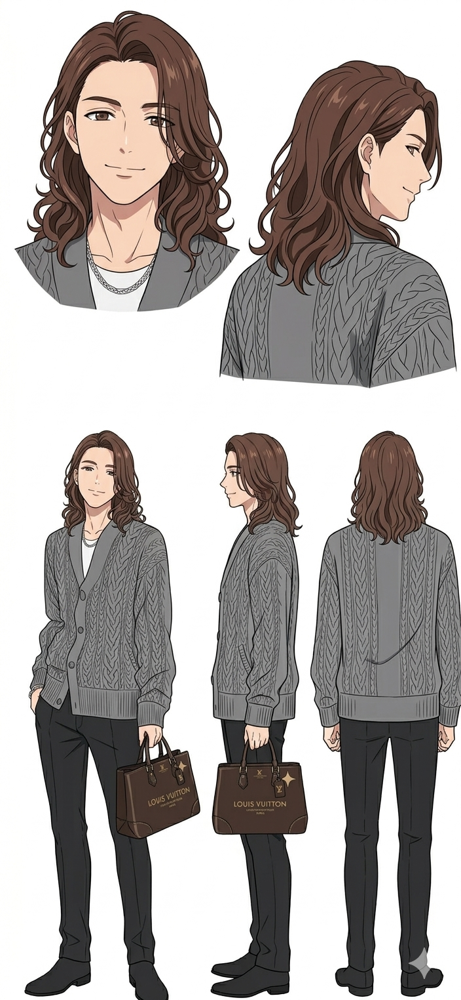
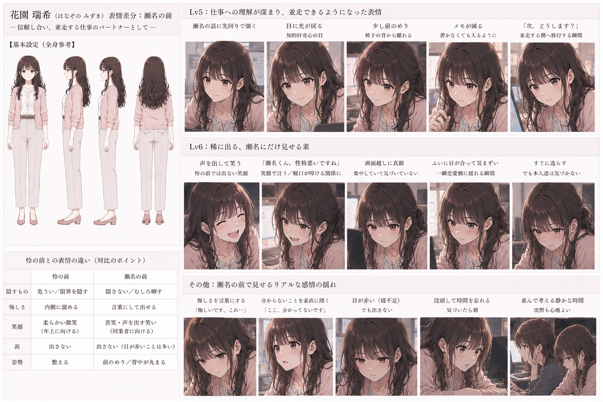

Episode 4.5: 深夜の会議室 —「火を持って帰る日」


瑞希の返答・選択：
「君の代わりに答えるためじゃない。君が自分で答えるための準備を、隣でするだけ」
守られるだけじゃない。君が自分の足で立ち、明日の答えを自分で見つけるための準備を、怜は静かに隣で引き受けてくれた。
テクニカルディレクター／30歳
物静かで理性的。長髪を緩く結んでいる。技術と数字で守る優しさを持つが、過去の傷から時に先回りして答えを奪ってしまう危うさも抱える。
プロダクト企画／25歳（主人公）
文具・ライフスタイルブランド「HARENIWA」の企画。優しさに甘えず、自分の力で強くなりたいと願う芯の強さを持つ。